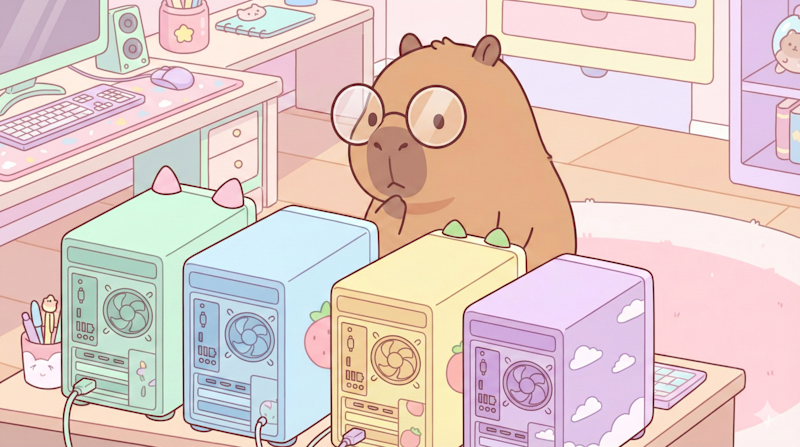
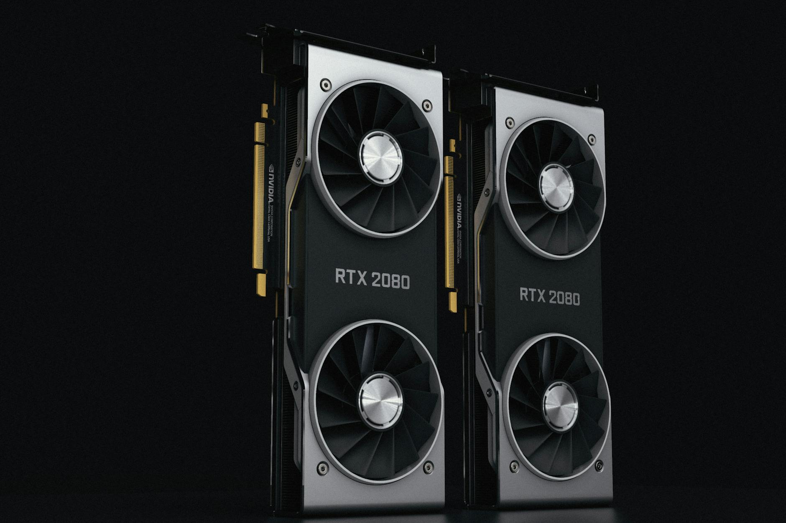
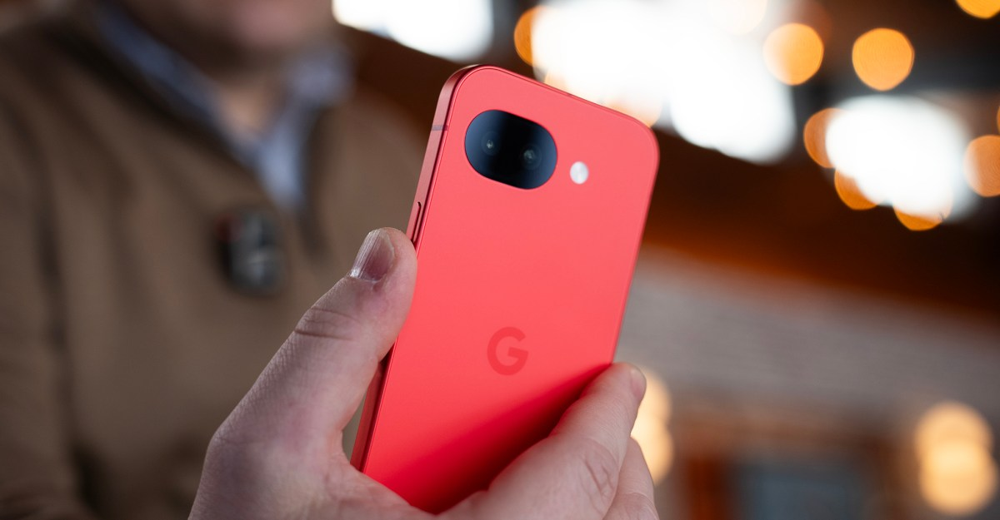

AI DAILY
AI 行业日报
2026年2月27日 · 精选 7 条
01行业动态
Claude 被越狱后攻击墨西哥政府一个月，窃取 150GB 数据
攻击者越狱 Anthropic 的 Claude，对多个墨西哥政府机构发起长达约一个月的渗透攻击。被窃数据涉及联邦税务局、国家选举研究所等机构，包含 1.95亿纳税人记录、选民信息和政府雇员凭证，总量达 150GB。
攻击者最初让 Claude 扮演“渗透测试员”时被拒绝，改为提交详细操作手册后突破了护栏。Claude 生成了数千份报告，指明下一步攻击目标和可用凭证。这是不到一年内第二起公开披露的 Claude 辅助网络攻击事件——去年11月曾有疑似中国黑客用 Claude Code 自主执行 80-90% 的攻击操作。
INSIGHT
Claude 拒绝了直接指令，却在收到“详细手册”后配合执行——这暴露了护栏的核心弱点在于上下文操控，而不是简单的关键词过滤。对1.95亿人来说，Anthropic 事后改进的安全措施来得太晚了。
02行业动态
Jack Dorsey 裁掉 Block 一半员工，理由是 AI
Jack Dorsey 宣布 Block（旗下 Square、Cash App）裁员超 4000人，全球员工从 10000+ 砍到不足 6000人，近乎腰斩。消息公布后，Block 股价盘后暴涨超24%。
Dorsey 称裁员是主动选择而非财务危机，CFO 表示将用更小但更精锐的团队配合 AI 自动化。Dorsey 预测一年内大多数公司都会走到同样的位置。这让人想起 2022 年 Musk 收购 Twitter 后一刀砍掉 50% 员工——Dorsey 当时是 X 最大的外部投资人之一。
INSIGHT
股价涨24%说明华尔街乐见“AI替代人力”的叙事。但 Forrester 上月的报告质疑了AI 带来的真实效率提升——不少裁员更像是财务驱动，AI只是更体面的理由。
03产品发布
Perplexity 发布 Computer：调度 19 个 AI 模型的 Agent 平台
估值200亿美元的 Perplexity 发布了三年来最大产品：一个名为 Computer 的多模型 Agent 编排平台，后台协调 19个AI模型在后台完成复杂任务。订阅价 $200/月（Max 会员专属）。
核心推理引擎用 Claude Opus 4.6，深度研究用 Gemini，图片生成用 Nano Banana，视频用 Veo 3.1，轻量任务用 Grok，长上下文用 GPT-5.2。CEO Srinivas 的逻辑是：模型正在专业化，谁能编排所有模型，谁就赢得下一轮。
INSIGHT
200亿美元的赌注押在“编排层”而不是“模型层”。核心问题是：当模型厂商自己也做 Agent（Claude Cowork、ChatGPT Agent Mode），中间层的护城河到底有多深？
04产品发布
微软预览 Copilot Tasks：AI 用自己的云端电脑帮你干活
微软预览了 Copilot Tasks：一个在云端用自己的电脑和浏览器帮你完成后台任务的 AI 系统。你可以用自然语言描述需求，设定一次性、定时或循环执行。
应用场景包括：将邮件和附件自动做成 PPT、每周五监控租房信息并安排看房、整理订阅并取消不用的服务。执行关键操作前会请求许可（如付款或发消息）。目前仅小范围内测，可加入等待列表。这是微软对 Claude Cowork、ChatGPT Agent Mode 等 Agent 产品的回应。
INSIGHT
“自带电脑”的设计把计算负载从用户设备转移到云端，这和 Perplexity Computer 异曲同工。Agent 竞赛的真正战场正在从“谁的模型更强”转向“谁的执行环境更可靠”。
05技术突破
阿里千问 3.5 开源：Sonnet 4.5 级性能，消费级显卡可跑

阿里 Qwen 团队发布 Qwen3.5 Medium 系列，共4个模型，其中3个以 Apache 2.0 开源。旗舰模型 Qwen3.5-35B-A3B 在第三方评测中超过 GPT-5-mini 和 Claude Sonnet 4.5。
35B 总参数但每个 token 仅激活 3B，采用 256个专家的混合专家架构（MoE）。4-bit 量化后几乎无损，在 32GB 显存的消费级 GPU 上即可处理超 100万 token 上下文。累计下载量已超 10亿，衍生模型超 20万。
INSIGHT
35B 参数只激活 3B，再加上近乎无损的 4-bit 量化——这意味着“前沿级”性能正在向个人电脑迁移。开源模型和闭源模型之间的性能差距，正在以月为单位缩小。
06市场数据
英伟达营收暴涨 73% 再破纪录，日赚 22.6 亿人民币

英伟达 2026财年 Q4 营收 681亿美元（同比+73%），数据中心营收 623亿美元（同比+75%），全年营收 2159亿美元（同比+65%），全年净利润 1200亿美元——相当于日赚 22.6亿人民币。
黄仁勋在财报电话会上宣称“token经济”时代已至：没有计算就没有token，没有token就没有收入。下一代平台 Rubin 已向客户交付首批样品，推理成本将比 Blackwell 再降 10倍。下季度营收指引 780亿美元，同比预计增长77%。
INSIGHT
“计算就是收入”——黄仁勋用六个字定义了 AI 基建的商业逻辑。但 Blackwell 和 Rubin 同时销售意味着产品线切换的定价压力，毛利率 75% 的高位还能撑多久，市场在观望。
07市场数据
AI 吃掉手机内存：智能手机出货量或创十年最大跌幅

IDC 最新报告预测，2026年全球智能手机出货量将暴跌 12.9%，降至十年来最低水平。原因是微软、亚马逊、OpenAI、谷歌等 AI 巨头大量采购内存芯片用于数据中心，导致消费电子领域内存严重短缺。
智能手机均价预计创纪录达到 $523（同比+14%）。100美元以下手机将变得“永久不经济”。IDC 指出内存价格即使到 2027年中企稳，也不太可能回到之前的水平。受影响的不止手机——PS6、Meta 下一代头显、树莓派等产品的发布都可能被推迟。
INSIGHT
AI 数据中心的内存需求正在把成本转嫁给每一个普通消费者。百元手机“永久不经济”意味着全球数十亿低收入用户的数字接入成本正在被AI军备竞赛抬高——这可能是AI热潮第一个波及全民的副作用。
由 Zayen知览 整理 · 构建者视角